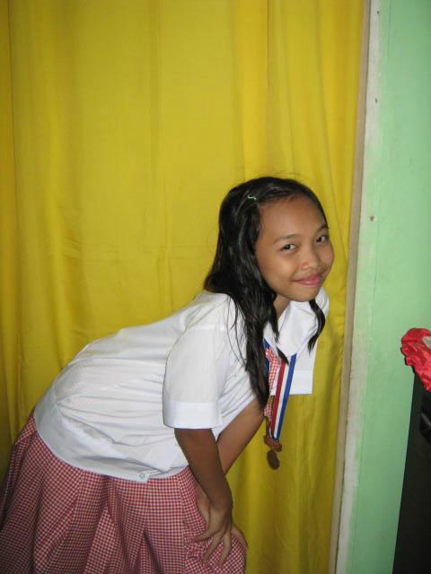

Add me on:
As for my personality, they say I have a good one. Yes, I am not perfect, I have flaws, but I'm quite proud that I have a good personality because it is a reflection of how good my mom and dad are in parenting that they have raised a daughter like me. Not for boasting but I must say that I am a kind person. How can I say I am kind? Well, I have many experiences in life even if I am only 19 years of age. I've been through a lot. I have experienced being betrayed, critizied, cheated on, lied on, and every negative thing you can imagine. But despite of it all, my heart is still forgiving to those who have sinned against me. My heart didn't grew cold nor hard. It is still gentle and loving because I am not letting bitterness harden my heart. I am a sweet and funny friend but I am also the moody and always hungry friend. I really love eating! My love for food is unexplainable and my close friends know about that! I love dancing, reading and above anything else, SLEEPING.
Too much of the introduction, now I will tell some stories about my little achievements in life.
|  |  |
I am a consistent honor student back then when I was in elementary. I am the first honor for 4 years straight then on grade 5 I finished being top 3. I graduated elementary as 3rd Honorable Mention. I am active also in extra curricular activities back then. It's funny that most of the contests that I had joined uses voice but my voice isn't that good in singing. But in story telling, poem declaration and jazz chant, it quite fits. I am also active in scouting and I am the leader in girlscout back then. I really enjoyed scouting because of its camping and benefits for my grades.
When I got into highschool, God had blessed me to be an academic scholar in Immaculate Conception Academy. I passed their examination and I got 90% discount in all fees. My highschool memories are good because it comprises of the best people in life. I can say that I have two big achievements during highschool and it's funny because it both happened during my senior year. I am an active participant of Journalism since I am first year. I tried feature writing and photojournalism when I was an elementary student but it didn't work out for me. So I tried using my voice for radio broadcasting when I was in highschool. I was only a participant always and I didn't win. I didn't have a chance to be on top in radio broadcasting. BUT NOT UNTIL MY SENIOR YEAR.
I finally got a chance to be on top and it really surprised me! Never in my life that I imagined myself in the REGIONAL level of Journalism where I will compete and will represent Cavite Province. I am 2nd Best News Presenter in Division Level and my radio broadcasting team is the 5th best over all the schools around Cavite and I'm really proud! I am still nostalgic to that very moment that my school was called to be on top 5.
I graduated highschool as 8th Honorable Mention. I really took an effort to be on top 10 because during 1st-3rd year I wasn't able to have honors because I became too 'happy go lucky' that I didn't able to gave my very best in studies. So I am happy that I am able to get into top 10 in my senior year. All Glory belongs to God.
And now, I am already in my 3rd Year taking up BS Psychology in De La Salle University- Dasmarinas. I can say that I am again really blessed because I am a 100% city scholar and I don't have anything to pay for in my college education. I will always be thankful to God because if it's not because of the scholarship, I can't really say if I can enter college because to be honest, we are not rich. So I will do my best to graduate on time and I will not let this blessing go to waste and also the sacrifices of the my loved ones just to give me a good education.
FUN FACTS ABOUT ME
- I don't eat plain and dark chocolates. I only choose the ones with almonds.
- I only eat chocolate cake nothing else.
- I am really addicted to korean actor Nam Joo Hyuk
- My first book to ever read is Percy Jackson. After that, my life as a bookworm started
- "Calypso" is a character from the series Percy Jackson and I really love her character that I want her identity to be mine so I am using her name in my social media accounts. (I'm sure Calypso will be my daughter's name in the future. lol)
- I am a basketfall fan because of my Father's influence. I have that NSD spirit! #GinKings and also #Dubnation. YES
- I am a consistent honor student since kinder up to high school but I still haven't achieved to be dean's lister yet. So frustrating.
- I have a healthy body, I think because I dance, I can play volleyball and swim good.